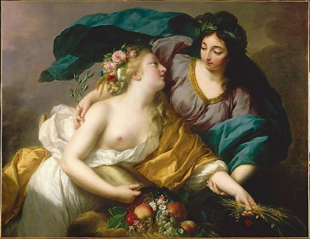
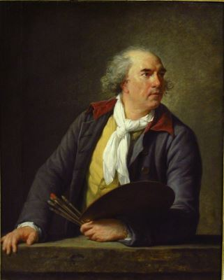
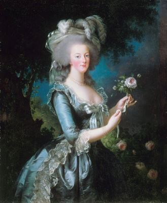
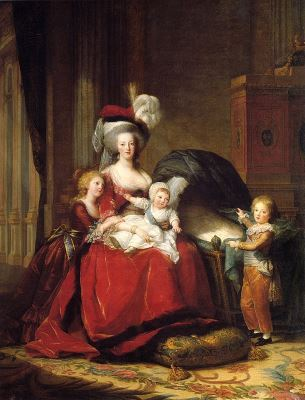
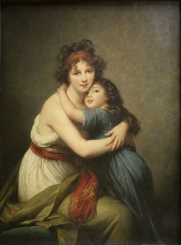
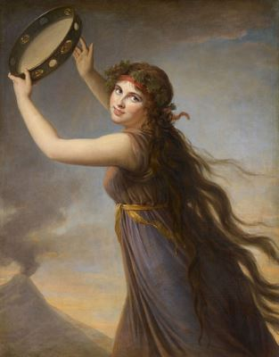
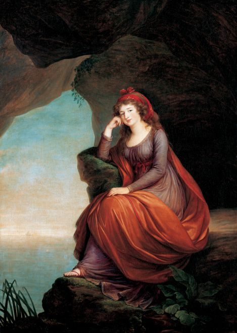

- Born in Paris on 16 April 1755;
- Entered a convent in in 1760 and remained there until 1766;
- Her father recognised Elizabeth's artistic talent and trained his daughter in earnest upon her return from the convent. By the time she was 12, her father died;
- At the age of 17, Elisabeth Vigée was a professional artist, receiving commissions for portraits well beyond her immediate social circle;
- In 1774 Vigée applied to and became a member of the powerful Academy of Saint Luc at age 19;
- Two years later, in 1776, she married the influential art dealer Jean-Baptiste Le Brun;
- By age 23, Vigée Le Brun received her first state-commission to paint the French queen Marie Antoinette for the queen's mother, Empress Maria Theresa of Austria, in 1778;
- The next decade saw Vigée Le Brun achieve unprecedented success as an artist in the French Royal Court. Between her admittance in 1784 to the breakout of the revolution in 1789, Vigée Le Brun contributed some 50 paintings, mostly consisting of portraiture, to the yearly Royal Salons;
- Vigée Le Brun was forced to flee France at the onset of the French Revolution in 1789. She fled to Italy with her young daughter, Julie;
- In her 12-year absence from France, she lived and worked in Italy (1789–1792), Austria (1792–1795), Russia (1795–1801) and Germany (1801);
- Elizabeth returned to Paris in 1802;
- She travelled to London in 1803, to Switzerland in 1807, and to Switzerland again in 1808. In Geneva, she was made an honorary member of the Société pour l'Avancement des Beaux-Arts. She stayed at Coppet with Madame de Staël, who she painted as Corinne, ou l'Italie (1807);
- In her later years, Vigée Le Brun purchased a house in Louveciennes, Île-de-France and divided her time between Louveciennes and Paris. She died in Paris on 30 March 1842, aged 86.
Élisabeth Vigée Le Brun
Biography
Some of her works






